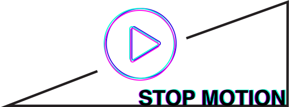
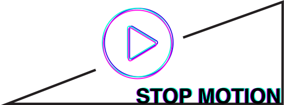
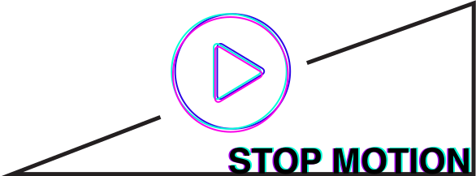
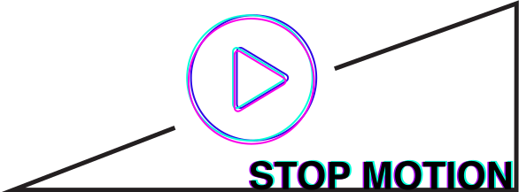

Stop motion project realised by a team of 3 students. The subject was to make a video using the Stop motion technic by divert and deform a object that we had chosen. We realised a work based on the evolution of the Music industy, the story tell the tragic destiny of a vinyle trying to keep its place close to a DJ.